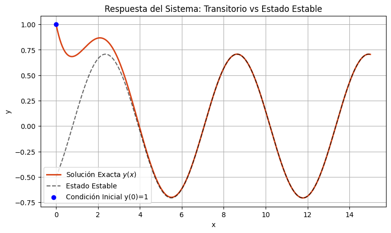
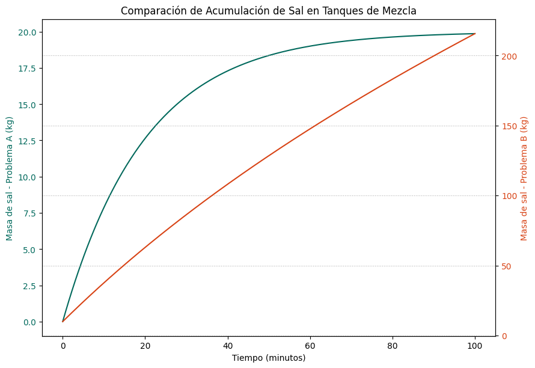

Una ecuación diferencial de primer orden se dice que es lineal si se puede escribir en la forma estándar:
$$ \frac{dy}{dx} + P(x)y = Q(x) $$
A diferencia de las ecuaciones separables u homogéneas, la estrategia para resolver estas ecuaciones es elegante: multiplicamos toda la ecuación por una función especial llamada Factor Integrante, denotado como \( \mu(x) \). Al hacer esto, el lado izquierdo de la ecuación se comprime en la derivada de un producto. La fórmula para el factor integrante es siempre:
$$ \mu(x) = e^{\int P(x) dx} $$
Objetivos de la sesión:
El método de resolución sigue los cuatro pasos siguientes:
Resuelve la ecuación diferencial: $$ \frac{dy}{dx} + \frac{2}{x}y = 3 $$
Solución: Ya está en forma estándar. Identificamos $$ P(x) = \frac{2}{x} \hbox{ y } Q(x) = 3 $$ Calculamos el factor integrante:
$$ \mu(x) = e^{\int P(x) dx} = e^{\int \frac{2}{x} dx} = e^{2\ln|x|} = e^{\ln(x^2)} = x^2 $$
Calculamos \(I\) :
$$ I= \int \mu Q(x) dx= \int 3x^2dx = x^3$$
Finalmente, la solución es::
$$ y =\frac{I+C}{\mu} =\frac{x^3+C}{x^2} = x + \frac{C}{x^2} $$
Resuelve: $$ x \frac{dy}{dx} - 4y = x^6 e^x $$
Solución: Dividimos entre \( x \) para llevarla a la forma estándar:
$$ \frac{dy}{dx} - \frac{4}{x}y = x^5 e^x $$
Aquí $$ P(x) = -\frac{4}{x}, \quad \hbox{ y } \quad Q(x) = x^5 e^x $$. El factor integrante es:
$$ \mu(x) = e^{\int P(x) dx}= e^{\int -\frac{4}{x} dx} = e^{-4\ln(x)} = x^{-4} $$ De donde $$ I= \int \mu Q(x) dx=\int \mu(x) Q(x)dx= \int x^{-4}x^5 e^x dx = \int x e^x dx$$ Integramos (usando integración por partes: $$ I = x e^x - e^x $$ Por lo cual $$ y = \frac{I+C}{\mu} =\frac{ x e^x - e^x+C}{x^{-4} } =x^5 e^x - x^4 e^x + C x^4 $$
Encuentra la solución general de: $$ \cos(x)\frac{dy}{dx} + \sin(x)y = 1 \hbox{ para } x \in (-\pi/2, \pi/2) $$.
Solución: Dividimos por \( \cos(x) \):
$$ \frac{dy}{dx} + \tan(x)y = \sec(x) $$
Identificamos $$ P(x) = \tan(x) , \quad \hbox{ y } \quad Q(x) = \sec(x) $$ Calculamos el factor integrante: $$ \mu(x)= e^{\int P(x) dx} = e^{\int \tan(x) dx} = e^{\ln|\sec(x)|} = \sec(x) $$ De donde $$ I=\int \mu Q(x)dx= \int \sec(x)\sec(x) dx =\int \sec^2(x)dx=\tan(x)$$ Entonces $$ y = \frac{I+C}{\mu} =\frac{ \tan(x)+C}{ \sec(x)} = \sin(x) + C\cos(x) $$
Resuelve el Problema de Valor Inicial (PVI) y genera su gráfica: $$ y' + y = \sin(x) , \hbox{ con } y(0) = 1 $$
Solución: La forma estándar nos da $$ P(x) = 1, \quad \hbox{ y } \quad Q(x) =\sin(x) $$ Luego $$ \mu= e^{\int P(x) dx} = e^{\int 1 dx} = e^x $$ También $$ I=\int \mu Q(x)dx= \sin(x) e^x = \frac{1}{2}e^x (\sin(x) - \cos(x)) $$ Recuerde que la integral \( \int e^x \sin(x) dx \) es cíclica (se hace por partes dos veces): Finalmente, la solución es: $$ y = \frac{I+C}{\mu} =\frac{ \frac{1}{2}e^x (\sin(x) - \cos(x)) +C }{ e^x } = \frac{1}{2}( \sin(x) - \cos(x) )+Ce^{-x} $$ Aplicamos la condición inicial \( y(0) = 1 \): $$ 1 = \frac{1}{2}(0 - 1) + C e^0 \implies 1 = -\frac{1}{2} + C \implies C = \frac{3}{2} $$ La solución particular es entonces: $$ y = \frac{1}{2}(\sin(x) - \cos(x)) + \frac{3}{2}e^{-x} .$$ En la figura siguiente se muestra la gráfica de la curva solución. Nota que al aumentar \(x\) desaparece el término exponencial (esa es nuestra solución estable)

Resuelve: $$ (x^2+1)\frac{dy}{dx} + 3xy = 6x $$
Solución: Dividimos entre \( (x^2+1) \):
$$ \frac{dy}{dx} + \frac{3x}{x^2+1}y = \frac{6x}{x^2+1} $$
El factor integrante requiere sustitución \( u = x^2+1, du = 2x dx \): $$ \mu = e^{\int P(x) dx}= \exp\left(\int \frac{3x}{x^2+1} dx\right) = \exp\left(\frac{3}{2}\ln(x^2+1)\right) = (x^2+1)^{3/2} $$ Calculamos ahora \(I\), tenemos $$ I=\int \mu Q(x)dx= \ int \frac{6x}{x^2+1} (x^2+1)^{3/2} dx = \int 6x (x^2+1)^{1/2} dx $$ Integramos usando otra vez \( u = x^2+1; \quad\quad du=2xdx \) $$ I= \frac{I+C}{\mu} =\int \mu Q(x)dx= 3 \int u^{1/2} du= 2u^{3/2} = 2 (x^2+1)^{3/2}$$ Finalmente $$ y = \frac{I+C}{\mu} =\frac{ 2 (x^2+1)^{3/2}+C }{(x^2+1)^{3/2} }= 2 + C(x^2+1)^{-3/2} $$
Uno de los usos más clásicos de las ecuaciones lineales es el modelado de tanques de mezcla. Sea \( A(t) \) la cantidad de soluto (ej. sal) en un tanque en el instante \( t \). La rapidez con la que cambia el soluto es la diferencia entre la razón de entrada y la razón de salida:
$$ \frac{dA}{dt} = R_{entrada} - R_{salida} $$
Donde:
\( R_{entrada} = \text{(Concentración entra)} \times \text{(Flujo entra)} \)
\( R_{salida} = \text{(Concentración en el tanque)} \times \text{(Flujo sale)} = \left(\frac{A(t)}{V(t)}\right) \times \text{(Flujo sale)} \)
Un tanque contiene inicialmente 100 Litros de agua pura. Se bombea una salmuera que contiene 0.2 kg de sal por litro a razón de 5 L/min. La mezcla se mantiene uniforme mediante agitación y sale del tanque a la misma razón (5 L/min). Encuentra la cantidad de sal \( A(t) \) en cualquier tiempo.
Solución
Planteamos las razones. $$ R_{entrada} = (0.2 \text{ kg/L})(5 \text{ L/min}) = 1 \text{ kg/min} $$ Como el flujo que entra es igual al que sale, el volumen es constante \( V(t) = 100 \). Entonces $$ R_{salida} = \left(\frac{A}{100}\right) \times 5 = \frac{A}{20}. $$ La ecuación diferencial es: $$ \frac{dA}{dt} = R_{entrada} - R_{salida} \implies \frac{dA}{dt} = 1 - \frac{A}{20} \implies \frac{dA}{dt} + \frac{1}{20}A = 1 $$ El factor integrante es:$$ \mu(t) = e^{\int \frac{1}{20} dt} = e^{t/20} $$. Además, $$ I=\int \mu(t) Q(t)dt= \int e^{t/20} dx =20 e^{t/20} $$ por lo cual $$ A(t) = \frac{I+C}{\mu} = \frac{20 e^{t/20}+C}{e^{t/20} } = 20 + C e^{-t/20} .$$ Usando la condición inicial: \( A(0) = 0 \) (agua pura) se tiene: $$0 = 20 + C \implies C = -20 $$ Finalmente, la solución es: $$ A(t) = 20(1 - e^{-t/20} ) \hbox{ kg } $$.
Un tanque contiene inicialmente 200 Litros de agua con 10 kg de sal. Entra salmuera a 1 kg/L a una velocidad de 3 L/min. La mezcla sale a 2 L/min. Encuentra \( A(t) \).
Solución:
En este caso \( R_{entrada} = (1)(3) = 3 \). El volumen cambia, ya que entran 3 y salen 2. $$V(t) = 200 + (3 - 2)t = 200 + t $$
La razón de salida es $$ R_{salida} = \frac{A}{200+t} \times 2 = \frac{2A}{200+t} $$ Tenemos entonces la ecuación diferencial: $$ \frac{dA}{dt} + \frac{2}{200+t}A = 3 $$ Calculamos el factor integrante: $$ \mu(t) = e^{\int \frac{2}{200+t} dt} = e^{2\ln(200+t)} = (200+t)^2 $$ Además, $$ I=\int \mu(t) Q(t)dt= \int 3 (200+t)^2 dt = (200+t)^3 + C$$ Finalmente, $$ A(t) = \frac{I+C}{\mu} =\frac{ (200+t)^3 + C C}{(200+t)^2} = (200+t) + \frac{C}{(200+t)^2} $$ Usando la condición inicial \( A(0) = 10 \) se tiene $$ 10 = 200 + \frac{C}{200^2} \implies -190 = \frac{C}{40000} \implies C = -7,600,000 $$ Por lo cual, la solución es: $$ A(t) = (200+t) - \frac{7,600,000}{(200+t)^2} $$ En la figura siguiente se muestra la gráfica de la curva solución.

Entra a la liga siguiente, allí podrás explorar la solución del problema de mezclas mediante un archivo de Python en Google-Colab Mezclas
El uso del Factor Integrante es una herramienta matemática que asombra la primera vez que se ve. Para desmitificarlo, copia y pega el siguiente prompt en tu IA (ChatGPT o Gemini):
"Actúa como un profesor universitario de ecuaciones diferenciales. Explícame matemáticamente y paso a paso por qué al multiplicar la ecuación y' + P(x)y = Q(x) por el factor integrante e^(∫P(x)dx), el lado izquierdo de la ecuación se convierte mágicamente en la derivada perfecta de un producto. Usa la regla del producto del cálculo diferencial en tu explicación y hazlo muy claro."
Tarea de análisis: Presta mucha atención al paso donde la IA deriva la función exponencial \( e^{\int P(x)dx} \) usando la regla de la cadena y el Teorema Fundamental del Cálculo. Ésta es la clave de todo el método.
Comprueba tus conocimientos conceptuales y de modelado de esta sesión seleccionando la respuesta correcta:
1. ¿Cuál de las siguientes ecuaciones es LINEAL de primer orden?
2. ¿Cuál es el factor integrante \( \mu(x) \) para la ecuación \( x \frac{dy}{dx} - 3y = x^4 \)?
3. En un problema de mezclas, si la tasa de entrada de líquido es mayor que la tasa de salida (ej. entra a 5 L/min, sale a 3 L/min), ¿qué ocurre con el término del volumen \( V(t) \) en el denominador de \( R_{salida} \)?
4. En el Problema A (Volumen constante), ¿qué sucede con la cantidad de sal en el tanque cuando el tiempo tiende a infinito (\( t \to \infty \))?
5. Al aplicar el factor integrante a la ecuación \( y' + P(x)y = Q(x) \), el lado izquierdo siempre se transforma rigurosamente en: